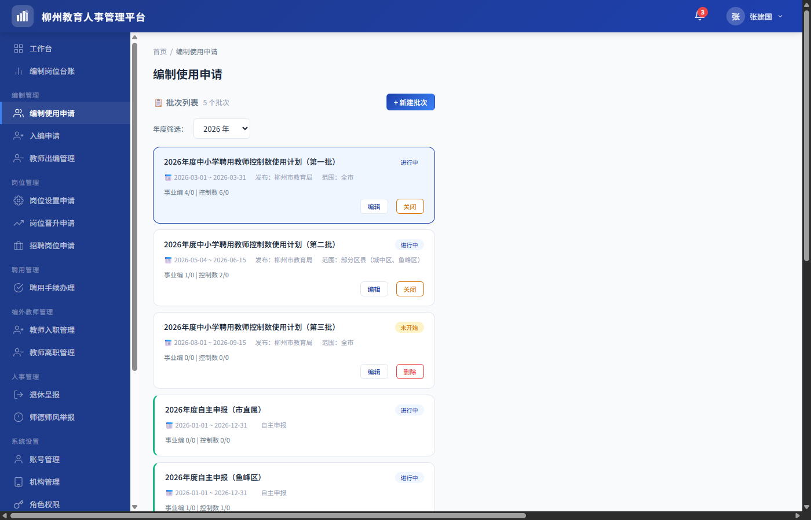
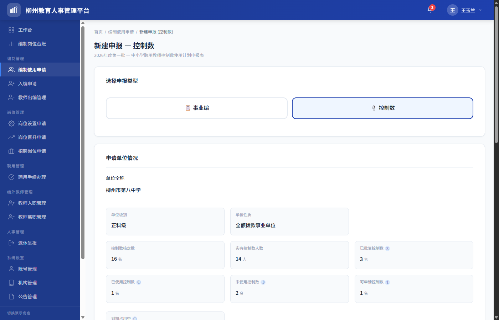
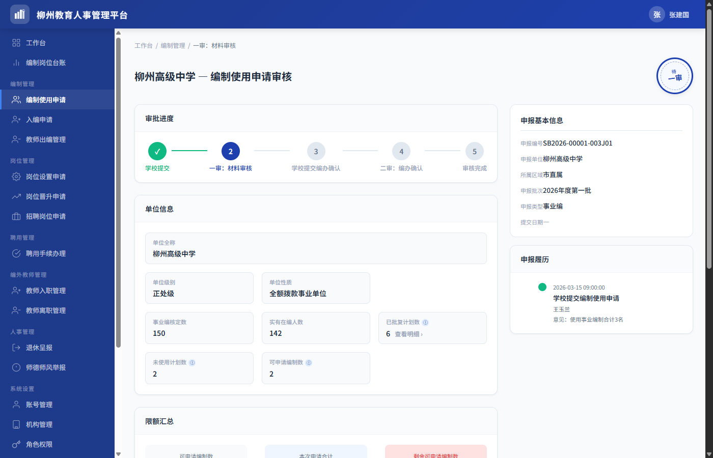

学校在招聘教师或调动人员前，须向机构编制委员会办公室（编办）提交编制使用计划申请。编办线下审批通过后，学校方可使用编制名额。本模块实现申请提交、主管审核、编办结果确认的全流程线上化。
| 目标 | 说明 |
|---|---|
| 线上化申报 | 替代传统的纸质编制使用计划申报，学校在线填写、上传附件、提交申请 |
| 分级审批 | 市/区管理员分别审核管辖范围内的学校申请，实现两级审批闭环 |
| 双轨并行 | 同时支持事业编（附件2）和控制数（附件9）两种编制类型的申报和审批 |
| 批次管理 | 支持管理员创建定向申报批次，控制申报窗口期和适用范围 |
| 数据联动 | 审批通过的编制名额自动进入编制可用池，供下游模块（入编、招聘）引用 |
| 特征 | 说明 |
|---|---|
| 双轨制 | 事业编（附件2，实名制）+ 控制数（附件9，备案制），各有独立的字段和计算公式 |
| 两级审批 | 一审（主管单位材料审核）+ 学校提交编办确认 + 二审（主管单位终审确认） |
| 批次模式 | 定向批次限每校每类型 1 次申报；自主申报批次（后续版本规划）不限次数 |
| 无草稿 | 提交即生效，不支持保存草稿功能，不设草稿状态 |
| 驳回可重提 | 被驳回后，学校可修改申请并重新提交，重新进入审批流程 |
| 编制类型锁定 | 修改重提时编制类型不可更改，仅允许修改人数、条件、附件等字段 |
| 权限隔离 | 市管理员仅审市直属学校，区管理员仅审本区学校，互不越权 |
| 申请单位情况快照 | 提交时冻结申请单位情况数据为快照，详情和审核以快照为准；审核页自动比对台账差异并提示；修改重提时从台账拉取最新数据 |
| 数据一致性 | 各页面共享同一数据源，确保状态同步 |
| 轨道 | 表单依据 | 编制类型 | 管理模式 |
|---|---|---|---|
| 事业编 | 附件2（事业单位编制使用计划申报表） | 实名制事业编制 | 核定编制数 − 实有在编人数 − 已批复计划数 |
| 控制数 | 附件9（中小学聘用教师控制数使用计划申报表） | 备案制聘用教师控制数 | 控制数核定数 − 实有控制数人数 − 已批复控制数 |
| 序号 | 名称 | 适用编制类型 |
|---|---|---|
| 1 | 统一公开招聘 | 事业编 / 控制数 |
| 2 | 单位自主实施招聘 | 事业编 / 控制数 |
| 3 | 中高级人才招聘 | 事业编 / 控制数 |
| 4 | 引进高层次人才 | 事业编 / 控制数 |
| 5 | 调动 | 事业编 / 控制数 |
| 6 | 其他 | 事业编 / 控制数 |
| 角色 | 权限范围 | 核心操作 |
|---|---|---|
| 市管理员 | 查看全市数据；仅可审核市直属学校 | 批次管理、审核（一审+二审）、导出数据、查看全部 |
| 区管理员 | 查看本区数据；仅可审核本区属学校 | 批次管理、审核（一审+二审）、导出数据 |
| 校管理员 | 仅可查看和操作本校数据 | 新建申报、修改重提、提交编办确认、导出 |
| 教师 | 无权限 | 不可访问本模块 |
| 系统管理员 | 无权限 | 不可访问本模块（仅负责系统配置功能，不接触业务数据） |
| 术语 | 说明 |
|---|---|
| 定向批次 | 由市/区管理员手动创建的申报批次，设定申报起止时间和适用范围，每校每种编制类型限申报 1 次 |
| 自主申报批次 | 由系统自动生成的全年有效批次，不限申报次数，用于紧急或零星需求（后续版本规划） |
| 学校提交编办确认 | 学校将主管单位一审通过的申请表导出，线下报送市委编办审批后，将审批结果（批复人数、有效期）回录到平台的操作 |
| 使用形式 | 编制名额的使用方式分类，包括统一公开招聘、单位自主实施招聘、中高级人才招聘、引进高层次人才、调动、其他共 6 种 |
| 一审：材料审核 | 主管单位对学校提交的申报材料进行的初次审核，审核通过后学校方可进行学校提交编办确认 |
| 二审：编办确认 | 学校提交编办确认材料后，主管单位进行的最终审核，确认通过后编制名额正式生效；主管可编辑编办确认信息后确认通过 |
| 修改重提 | 申请被驳回后，学校修改申请内容并重新提交的操作，重新进入一审流程，申报编号保持不变 |
本模块采用两级审批模式：
| 学校归属 | 审批路径 | 终审人 |
|---|---|---|
| 市直属学校 | 学校提交 → 市管理员一审 → 学校编办确认 → 市管理员二审：编办确认 | 市管理员 |
| 区属学校 | 学校提交 → 区管理员一审 → 学校编办确认 → 区管理员二审：编办确认 | 区管理员 |
审批过程中任一环节驳回，申请回到"一审驳回"状态，学校修改后可重新提交。二审环节仅支持确认通过，或编辑编办确认信息后确认通过，不支持驳回。
本模块采用两级审批模式：学校提交 → 主管单位一审 → 学校提交编办确认 → 主管单位二审确认通过。市直属学校由市管理员审核，区属学校由区管理员审核。审批过程中一审可驳回，学校修改重提后重新进入一审流程。
编制使用申请模块是编制生命周期的入口。申请终审通过后，批复的编制名额进入"编制可用池"，供教师入编、招聘岗位申请、聘用手续办理（调动）、编制岗位台账等下游模块关联和消耗。
| 上游模块 | 触发事件 | 联动数据 | 下游模块 | 影响 |
|---|---|---|---|---|
| 编制使用申请 | 二审确认通过 | 批复编制数、有效期、编制类型 | 教师入编 | 入编时可选择该批次的编制名额；入编后已使用计划数增加、未使用计划数减少、实有人数增加 |
| 编制使用申请 | 二审确认通过 | 批复编制数、有效期、编制类型 | 招聘岗位申请 | 招聘申请可关联该编制批次，终审通过后已使用计划数累加 |
| 编制使用申请 | 二审确认通过 | 批复编制数、有效期、编制类型 | 聘用手续办理（调动） | 办理调动聘用手续时可选择该批次的编制名额，完成后已使用计划数累加 |
| 编制使用申请 | 二审确认通过 | 批复编制数、有效期、编制类型、已使用计划数、未使用计划数 | 编制岗位台账 | 台账展示各批次的编制使用情况（已批复/已使用/未使用），入编、出编等变动实时同步更新台账数据 |
| 教师出编 | 出编审批通过 | 释放的编制数 | 编制使用申请 | 已使用计划数减少、未使用计划数增加、实有人数减少，释放对应数量编制回可用池 |
编制使用申请与岗位设置可并行进行。招聘岗位申请和聘用手续办理（调动）均需要关联已批复的编制批次。
| 指标 | 计算逻辑 | 说明 |
|---|---|---|
| 已批复计划数 | 所有已完成申请的编办确认数累计 | 仅已完成状态计入 |
| 已使用计划数 | 入编通过人数 + 招聘终审通过人数 + 调动完成人数 | 实际占用的编制数 |
| 未使用计划数 | 已批复计划数 − 已使用计划数 | 剩余可用的编制名额 |
| 实有人数 | 当前在编实际人数（入编后增加、出编后减少） | 在编教师实际数量，不同于已使用计划数（含招聘在途） |
| 有效期状态 | 下游行为 |
|---|---|
| 有效期内 | 入编/招聘/台账可正常关联此编制批次 |
| 已过期 | 入编/招聘页面的批次下拉列表中不显示或标记"已过期"，不可选择；台账仍可查看历史数据 |
| 即将到期（≤30 天） | 显示黄色警告标签，仍可选择但提示即将到期。即将到期提醒由 编制岗位台账模块 统一管理，各模块引用台账的到期状态标记 |
| 规则 | 说明 |
|---|---|
| 自动释放 | 编制有效期到期后，该批复中未使用的名额自动释放，已使用计划数和未使用计划数相应调减，可申请编制数相应回升 |
| 已占用不受影响 | 到期前已占用（招聘在途）或已入编的名额不受释放影响，仅释放未使用的剩余名额 |
| 有效期延长 | 暂不支持，后续版本迭代 |
| 编号 | 功能 | 优先级 | 角色 | 说明 |
|---|---|---|---|---|
| F01.01 | 创建批次 | P0 | 市/区管理员 | 弹框填写 → 确认创建 → 列表刷新 |
| F01.02 | 编辑批次 | P1 | 市/区管理员 | 根据批次状态有条件可编辑 |
| F01.03 | 关闭/删除批次 | P1 | 市/区管理员 | 进行中关闭（不可恢复）；未开始删除 |
| F01.04 | 查看批次详情 | P1 | 全部 | 弹框展示完整信息及统计 |
| F01.05 | 年份筛选 | P1 | 全部 | 下拉选择年份或全部年份 |
| F02.01 | 查看申报列表 | P0 | 全部 | 管理员：批次卡片区 + 申报记录列表；校管理员：本校申报记录列表，支持筛选和分页 |
| F03.01 | 提醒未提交学校 | P2 | 市/区管理员 | 每天每校每批次限 1 次 |
| F04.01 | 单条导出 | P1 | 校管理员 | 按模板导出附件2（事业编）或附件9（控制数），仅一审通过和已完成状态可导出 |
| F04.02 | 批次汇总导出 | P1 | 市/区管理员 | 按模板导出附件3（事业编）或附件10（控制数）批次汇总 |
| F04.03 | 年度汇总导出 | P1 | 市/区管理员 | 按模板附件4导出年度编制使用情况报告 |
| F05.01 | 按状态筛选 | P1 | 全部 | 标签按钮组切换；管理员额外有"未提交" |
| F05.02 | 按编制类型筛选 | P1 | 市/区管理员 | 全部/事业编/控制数 |
| F05.03 | 按申请单位筛选 | P1 | 市/区管理员 | 可搜索下拉单选，支持模糊匹配 |
| F05.04 | 列表分页 | P1 | 全部 | 每页 10 条，分页栏始终显示 |
| F06.01 | 新建申请 | P0 | 校管理员 | 进入表单页；定向批次检查重复 |
| F06.02 | 申请单位情况自动填充 | P0 | 校管理员 | 系统自动带出，只读，按编制类型展示不同字段集 |
| F06.03 | 填写使用形式及数量 | P0 | 校管理员 | 6 行，人数>0 时学历必填，实时汇总 |
| F06.04 | 上传附件 | P0 | 校管理员 | 拖拽/点击，格式+大小校验，禁止压缩包 |
| F06.05 | 提交申请 | P0 | 校管理员 | 校验 → 生成编号 → 捕获快照 → 保存数据 → 跳转 |
| F06.06 | 提交编办确认 | P0 | 校管理员 | 填写确认数+有效期+上传批复文件 → 待二审 |
| F06.07 | 修改重提 | P0 | 校管理员 | 编制类型锁定，其他可改 → 编号不变 → 重置为待一审 |
| F07.01 | 查看审核页面 | P0 | 市/区管理员 | 进入审核页查看申报详情，比对台账快照差异，执行审核操作 |
| F08.01 | 一审通过 | P0 | 市/区管理员 | 待一审 → 一审通过 |
| F08.02 | 一审驳回 | P0 | 市/区管理员 | 待一审 → 一审驳回（必填原因） |
| F08.03 | 二审通过 | P0 | 市/区管理员 | 待二审 → 已完成（终态）；可编辑确认信息后确认通过 |
| F09.01 | 查看申报详情信息 | P0 | 全部 | 申报进度+单位情况+限额汇总+使用形式+附件，申报基本信息+申报履历 |
| F09.02 | 查看申报履历 | P0 | 全部 | 时间线展示申报全流程操作记录：提交申报→一审驳回→修改重提→一审通过→提交编办确认→二审通过 |
| F09.03 | 下载/预览附件 | P1 | 全部 | 每个附件支持预览和下载两种操作 |
| 类型 | 创建方式 | 提交限制 | 典型场景 |
|---|---|---|---|
| 定向批次 | 市/区管理员手动创建 | 每校每种编制类型限 1 次 | 年度集中申报 |
| 自主申报批次 | 系统自动生成，全年存在 | 不限次数 | 紧急/零星需求（后续版本规划） |
| 状态 | 含义 | 学校操作 | 主管操作 |
|---|---|---|---|
| 未开始 | 已创建但尚未到达申报开始时间 | 仅可查看 | 可编辑、可删除 |
| 进行中 | 处于开放申报窗口期 | 可申报、驳回可重提、导出 | 审核、编辑、手动关闭、导出 |
| 已结束 | 申报窗口已关闭 | 仅可查看历史记录 | 审核、导出、可编辑 |
| 字段 | 输入方式 | 必填 | 编辑规则 |
|---|---|---|---|
| 批次编号 | 系统自动生成 | — | 只读展示，不可修改；新建弹框不展示（创建成功后自动生成） |
| 批次类型 | 系统默认 | — | 固定为"定向批次" / "自主申报批次"，只读展示，不允许编辑 |
| 批次名称 | 文本输入 | 是 | 随时可改，最多 50 字 |
| 年度 | 下拉选择 | 是 | 创建后永久锁定 |
| 申报开始日期 | 日期选择 | 是 | 仅"未开始"可修改；从当天 00:00:00 起 |
| 申报截止日期 | 日期选择 | 是 | 所有状态均可修改，截止到当天 23:59:59；已结束批次仅可往后延长（不可提前）。若"已结束"批次的截止日期延长后晚于当前时间，批次状态自动恢复为"进行中" |
| 适用范围 | 级联选择 | 是 | 创建后永久锁定。市管理员：全市 / 指定区（可多选）+ 区下所有学校 / 指定学校（精确到校）；区管理员：本区 / 指定学校（本区下部分学校） |
| 备注说明 | 文本域 | 否 | 随时可改，最多 200 字 |
| 属性 | 内容 |
|---|---|
| 优先级 | P0 |
| 角色 | 市管理员、区管理员 |
| 触发条件 | 点击列表页"新建批次"按钮 |
| 前置条件 | 无 |
| 后置条件 | 新批次出现在列表中 |
| 业务规则 |
|
| 交互规则 | 弹出模态框 → 填写 → 确认创建 → 校验 → 列表刷新 |
| 属性 | 内容 |
|---|---|
| 优先级 | P1 |
| 角色 | 市管理员、区管理员 |
| 触发条件 | 点击批次卡片"编辑" |
| 前置条件 | 非自主申报批次 |
| 后置条件 | 批次信息更新 |
| 业务规则 |
|
| 交互规则 | 弹出模态框（预填当前值）→ 锁定字段置灰 → 保存 → 刷新 |
| 属性 | 内容 |
|---|---|
| 优先级 | P1 |
| 角色 | 市管理员、区管理员 |
| 触发条件 | 点击"关闭"（进行中）或"删除"（未开始） |
| 前置条件 | 关闭：进行中；删除：未开始 |
| 后置条件 | 关闭：状态变为已结束；删除：批次移除 |
| 业务规则 |
|
| 交互规则 | 点击"关闭"/"删除" → 弹出二次确认对话框（提示操作后果：关闭后学校不可再提交新申请、操作不可恢复）→ 确认 → 执行 → 刷新 |
| 属性 | 内容 | ||||||||||||||||||||||||||||||||||
|---|---|---|---|---|---|---|---|---|---|---|---|---|---|---|---|---|---|---|---|---|---|---|---|---|---|---|---|---|---|---|---|---|---|---|---|
| 优先级 | P1 | ||||||||||||||||||||||||||||||||||
| 角色 | 全部（除教师、系统管理员） | ||||||||||||||||||||||||||||||||||
| 触发条件 | 点击批次名称 | ||||||||||||||||||||||||||||||||||
| 前置条件 | 无 | ||||||||||||||||||||||||||||||||||
| 后置条件 | 弹出批次详情弹框 | ||||||||||||||||||||||||||||||||||
| 业务规则 |
基本信息区展示以下字段：
申报统计区展示以下汇总指标：
统计指标按编制类型（事业编/控制数）分别展示。 | ||||||||||||||||||||||||||||||||||
| 交互规则 | 点击批次名称 → 弹出模态框展示 |
| 属性 | 内容 |
|---|---|
| 优先级 | P1 |
| 角色 | 全部（除教师、系统管理员） |
| 触发条件 | 点击批次卡片区顶部的年份下拉选择器 |
| 前置条件 | 无 |
| 后置条件 | 批次卡片区仅显示选中年份的批次 |
| 业务规则 |
|
| 交互规则 | 点击下拉框 → 选择年份 → 批次卡片区和列表同步刷新 |
申报列表页（staffing-application.html）是编制使用申请模块的核心入口页面。不同角色看到的列表内容和操作按钮不同。
| 属性 | 内容 |
|---|---|
| 优先级 | P0 |
| 角色 | 市管理员、区管理员、校管理员 |
| 触发条件 | 从工作台侧边栏点击"编制使用申请"菜单进入列表页 |
| 前置条件 | 当前用户已登录且具有本模块访问权限（系统管理员和教师不可访问） |
| 后置条件 | 展示批次列表和对应批次的申报记录列表，默认选中最新年份的第一个批次 |
| 业务规则 |
|
| 交互规则 | 点击批次卡片 → 选中批次、刷新列表并重置筛选条件；点击"新建批次"→ 创建批次弹框；点击"查看"→ 详情页；点击"审核"→ 审核页；点击"提交编办确认"→ 编办确认弹框；点击"修改重提"→ 表单页预填数据 |
| 属性 | 内容 |
|---|---|
| 优先级 | P2 |
| 角色 | 市管理员、区管理员 |
| 触发条件 | 在批次卡片的"未提交"视图，点击某学校的"提醒申报"按钮 |
| 前置条件 | 批次为进行中；该学校尚未提交该编制类型的申请 |
| 后置条件 | 提醒已发送，该学校当日该批次不可再次提醒，按钮变为"今日已提醒"并置灰 |
| 业务规则 |
|
| 交互规则 | 点击"提醒申报"按钮 → 弹出"提醒申报确认"对话框（正文："将向{学校名称}发送编制使用申请提醒通知。每个学校每日最多提醒一次。"）→ 点击"确认发送"→ 系统记录提醒日志 → 按钮变为"今日已提醒"（置灰）→ Toast 提示"已向「{学校名称}」发送申报提醒" |
| 属性 | 内容 | ||||||||||||||||||||||||||||||||||||||||||||||||||||||||||||||||||||||||||||||||||||||||||||||||||||||||
|---|---|---|---|---|---|---|---|---|---|---|---|---|---|---|---|---|---|---|---|---|---|---|---|---|---|---|---|---|---|---|---|---|---|---|---|---|---|---|---|---|---|---|---|---|---|---|---|---|---|---|---|---|---|---|---|---|---|---|---|---|---|---|---|---|---|---|---|---|---|---|---|---|---|---|---|---|---|---|---|---|---|---|---|---|---|---|---|---|---|---|---|---|---|---|---|---|---|---|---|---|---|---|---|---|---|
| 优先级 | P1 | ||||||||||||||||||||||||||||||||||||||||||||||||||||||||||||||||||||||||||||||||||||||||||||||||||||||||
| 角色 | 校管理员 | ||||||||||||||||||||||||||||||||||||||||||||||||||||||||||||||||||||||||||||||||||||||||||||||||||||||||
| 触发条件 | 列表页点击某条记录的"导出数据"按钮 | ||||||||||||||||||||||||||||||||||||||||||||||||||||||||||||||||||||||||||||||||||||||||||||||||||||||||
| 前置条件 | 记录状态为一审通过或已完成 | ||||||||||||||||||||||||||||||||||||||||||||||||||||||||||||||||||||||||||||||||||||||||||||||||||||||||
| 后置条件 | 下载导出文件 | ||||||||||||||||||||||||||||||||||||||||||||||||||||||||||||||||||||||||||||||||||||||||||||||||||||||||
| 业务规则 |
| ||||||||||||||||||||||||||||||||||||||||||||||||||||||||||||||||||||||||||||||||||||||||||||||||||||||||
| 模板字段映射 |
附件2 — 事业编（事业单位编制使用计划申报表）：
附件9 — 控制数（中小学聘用教师控制数使用计划申报表）：
| ||||||||||||||||||||||||||||||||||||||||||||||||||||||||||||||||||||||||||||||||||||||||||||||||||||||||
| 交互规则 | 点击"导出数据"→ 按编制类型匹配模板 → 生成文件（UTF-8 BOM）→ 触发浏览器下载 → Toast 提示"已导出：{文件名}" |
| 属性 | 内容 | ||||||||||||||||||||||||||||||||||||||||||||||||||||||||||||||||||||||||||||||||||||||||||||||||||||||||||||||||||||||||||||||||||||||||||||||||
|---|---|---|---|---|---|---|---|---|---|---|---|---|---|---|---|---|---|---|---|---|---|---|---|---|---|---|---|---|---|---|---|---|---|---|---|---|---|---|---|---|---|---|---|---|---|---|---|---|---|---|---|---|---|---|---|---|---|---|---|---|---|---|---|---|---|---|---|---|---|---|---|---|---|---|---|---|---|---|---|---|---|---|---|---|---|---|---|---|---|---|---|---|---|---|---|---|---|---|---|---|---|---|---|---|---|---|---|---|---|---|---|---|---|---|---|---|---|---|---|---|---|---|---|---|---|---|---|---|---|---|---|---|---|---|---|---|---|---|---|---|---|---|---|---|---|
| 优先级 | P1 | ||||||||||||||||||||||||||||||||||||||||||||||||||||||||||||||||||||||||||||||||||||||||||||||||||||||||||||||||||||||||||||||||||||||||||||||||
| 角色 | 市管理员、区管理员 | ||||||||||||||||||||||||||||||||||||||||||||||||||||||||||||||||||||||||||||||||||||||||||||||||||||||||||||||||||||||||||||||||||||||||||||||||
| 触发条件 | 在批次卡片操作区点击"📥 导出数据"按钮 | ||||||||||||||||||||||||||||||||||||||||||||||||||||||||||||||||||||||||||||||||||||||||||||||||||||||||||||||||||||||||||||||||||||||||||||||||
| 前置条件 | 批次下至少有一条申请记录 | ||||||||||||||||||||||||||||||||||||||||||||||||||||||||||||||||||||||||||||||||||||||||||||||||||||||||||||||||||||||||||||||||||||||||||||||||
| 后置条件 | 按模板导出批次汇总文件（事业编→附件3，控制数→附件10） | ||||||||||||||||||||||||||||||||||||||||||||||||||||||||||||||||||||||||||||||||||||||||||||||||||||||||||||||||||||||||||||||||||||||||||||||||
| 业务规则 |
| ||||||||||||||||||||||||||||||||||||||||||||||||||||||||||||||||||||||||||||||||||||||||||||||||||||||||||||||||||||||||||||||||||||||||||||||||
| 模板字段映射 |
附件3 — 机关事业单位编制使用计划汇总表（事业编）：
附件10 — 中小学聘用教师控制数使用计划汇总表（控制数）：
| ||||||||||||||||||||||||||||||||||||||||||||||||||||||||||||||||||||||||||||||||||||||||||||||||||||||||||||||||||||||||||||||||||||||||||||||||
| 交互规则 |
|
| 属性 | 内容 | ||||||||||||||||||||||||||||||||||||||||||||||||||||||||
|---|---|---|---|---|---|---|---|---|---|---|---|---|---|---|---|---|---|---|---|---|---|---|---|---|---|---|---|---|---|---|---|---|---|---|---|---|---|---|---|---|---|---|---|---|---|---|---|---|---|---|---|---|---|---|---|---|---|
| 优先级 | P1 | ||||||||||||||||||||||||||||||||||||||||||||||||||||||||
| 角色 | 市管理员、区管理员 | ||||||||||||||||||||||||||||||||||||||||||||||||||||||||
| 触发条件 | 切换到"年度汇总"模式，勾选一个或多个批次后点击"汇总导出" | ||||||||||||||||||||||||||||||||||||||||||||||||||||||||
| 前置条件 | 至少勾选 1 个批次 | ||||||||||||||||||||||||||||||||||||||||||||||||||||||||
| 后置条件 | 按附件4模板导出年度编制使用情况报告 | ||||||||||||||||||||||||||||||||||||||||||||||||||||||||
| 业务规则 |
| ||||||||||||||||||||||||||||||||||||||||||||||||||||||||
| 模板字段映射 |
附件4 — XXXX年度编制使用情况报告表：
跨模块数据说明：附件4为年度编制使用全流程跟踪报告，"已办理入编手续"和"未办理入编"列的数据来源于下游教师入编模块。编制使用申请模块导出时，第 1-6 列和备注列由本模块填充，第 7-10 列入编相关数据留空，待入编模块后续补充后合并为完整报告。
| ||||||||||||||||||||||||||||||||||||||||||||||||||||||||
| 交互规则 | 切换到"年度汇总"模式 → 勾选同一年度的一个或多个批次（复选框）→ 点击"汇总导出"→ 系统汇总所选批次下所有已完成申请，按单位+计划类型逐行展开 → 按模板生成文件 → 触发浏览器下载 → Toast 提示"已导出：{文件名}" |
| 属性 | 内容 |
|---|---|
| 优先级 | P1 |
| 角色 | 全部（除教师、系统管理员） |
| 触发条件 | 点击列表上方状态标签按钮组中的任一标签 |
| 前置条件 | 无 |
| 后置条件 | 列表仅显示对应状态的记录，标签高亮 |
| 业务规则 |
|
| 交互规则 | 点击标签 → 标签高亮 → 列表刷新 → 显示"共 X 条" |
| 属性 | 内容 |
|---|---|
| 优先级 | P1 |
| 角色 | 市管理员、区管理员 |
| 触发条件 | 点击列表上方的编制类型筛选标签 |
| 前置条件 | 无 |
| 后置条件 | 列表仅显示对应编制类型的记录 |
| 业务规则 |
|
| 交互规则 | 点击标签 → 标签高亮 → 列表刷新 |
| 属性 | 内容 |
|---|---|
| 优先级 | P1 |
| 角色 | 市管理员、区管理员 |
| 触发条件 | 在申请单位搜索下拉框中输入关键词或选择学校 |
| 前置条件 | 无 |
| 后置条件 | 列表仅显示匹配学校的记录 |
| 业务规则 |
|
| 交互规则 | 输入关键词 → 下拉列表实时过滤 → 选中学校 → 列表刷新 |
| 属性 | 内容 |
|---|---|
| 优先级 | P1 |
| 角色 | 全部（除教师、系统管理员） |
| 触发条件 | 列表加载后自动分页，点击分页栏切换页码 |
| 前置条件 | 无 |
| 后置条件 | 列表展示当前页数据 |
| 业务规则 |
|
| 交互规则 | 点击页码/导航按钮 → 列表切换对应页数据 → 滚动条回到列表顶部 |
| 状态 | 印章颜色 | 含义 |
|---|---|---|
| 待一审 | 蓝色 | 学校已提交申请，等待主管单位进行一审：材料审核 |
| 一审通过 | 绿色 | 主管单位一审通过，等待学校提交编办确认材料 |
| 待二审 | 橙色 | 学校已提交编办批复文件，等待主管单位进行二审：编办确认 |
| 已完成 | 绿色 | 二审确认通过，编制名额生效（终态） |
| 一审驳回 | 红色 | 申请被驳回，学校可修改后重新提交 |
| 状态 | 校管理员 | 区/市管理员（有权限） |
|---|---|---|
| 待一审 | 查看 | 审核（一审通过 / 驳回） |
| 一审通过 | 查看、提交编办确认、导出 | 查看 |
| 待二审 | 查看 | 审核（确认通过 / 编辑后确认通过） |
| 已完成 | 查看、导出 | 查看、导出 |
| 一审驳回 | 查看、修改重提 | 查看 |
| 属性 | 内容 |
|---|---|
| 优先级 | P0 |
| 角色 | 校管理员 |
| 触发条件 | 分三种场景：① 定向批次未申报时，点击列表空状态区的"申报事业编"/"申报控制数"按钮；② 定向批次仅提交一种编制类型时，点击缺失类型提示条中的"申报{类型}"按钮；③ 自主申报批次，点击列表上方"申报事业编"/"申报控制数"按钮 |
| 前置条件 | 批次为进行中；定向批次下该编制类型未提交过（自主申报批次不限次数） |
| 后置条件 | 进入表单页，携带批次和编制类型参数 |
| 业务规则 | 定向批次每校每种编制类型限 1 次，重复时阻止并提示；自主申报批次不限次数，同一学校可多次提交 |
| 交互规则 | 点击 → 检查重复 → 如有则提示 → 如无则跳转表单页 |
| 属性 | 内容 | ||||||||||||||||||||||||||||||||||||||
|---|---|---|---|---|---|---|---|---|---|---|---|---|---|---|---|---|---|---|---|---|---|---|---|---|---|---|---|---|---|---|---|---|---|---|---|---|---|---|---|
| 优先级 | P0 | ||||||||||||||||||||||||||||||||||||||
| 角色 | 校管理员 | ||||||||||||||||||||||||||||||||||||||
| 触发条件 | 进入新建申报表单页时自动触发 | ||||||||||||||||||||||||||||||||||||||
| 前置条件 | 当前登录用户已有学校归属 | ||||||||||||||||||||||||||||||||||||||
| 后置条件 | 申请单位情况字段自动填充且置灰不可编辑 | ||||||||||||||||||||||||||||||||||||||
| 业务规则 |
限额汇总统计规则：
每个指标旁显示 ℹ 图标，悬停展示指标说明。可申请数为核心校验指标，申请合计超过可申请数时显示红色警告。 | ||||||||||||||||||||||||||||||||||||||
| 交互规则 | 进入页面 → 自动加载 → 字段填充 → 只读灰色背景显示 | ||||||||||||||||||||||||||||||||||||||
| 属性 | 内容 |
|---|---|
| 优先级 | P0 |
| 角色 | 校管理员 |
| 触发条件 | 在表单页的使用形式明细区域逐行填写 |
| 前置条件 | 已选定编制类型 |
| 后置条件 | 实时显示申请合计和剩余可申请数 |
| 业务规则 |
|
| 交互规则 | 输入人数 → 人数 > 0 时该行三个条件字段（学历/专业/从业资格等、相关条件、备注）高亮为必填 → 实时更新顶部限额汇总区的可申请数验算公式（可申请数 − 本次申请合计 = 剩余可申请数）→ 剩余可申请数为负时红色警告 |
| 属性 | 内容 |
|---|---|
| 优先级 | P0 |
| 角色 | 校管理员 |
| 触发条件 | 在表单页附件上传区点击或拖拽文件 |
| 前置条件 | 无 |
| 后置条件 | 附件列表展示已选文件，支持预览和删除 |
| 业务规则 |
|
| 交互规则 | 拖拽文件至上传区 → 显示虚线高亮 → 松手 → 校验格式和大小 → 加入附件列表（显示文件名、大小、删除按钮）。点击上传区 → 弹出文件选择器 → 选择 → 同上。点击删除 → 移除该文件 |
| 属性 | 内容 | |||||||||||||||||||||||||||||||||||
|---|---|---|---|---|---|---|---|---|---|---|---|---|---|---|---|---|---|---|---|---|---|---|---|---|---|---|---|---|---|---|---|---|---|---|---|---|
| 优先级 | P0 | |||||||||||||||||||||||||||||||||||
| 角色 | 校管理员 | |||||||||||||||||||||||||||||||||||
| 触发条件 | 表单页点击"提交申报" | |||||||||||||||||||||||||||||||||||
| 前置条件 | ① 申请合计 > 0；② 有使用人数的行已填必填字段（学历/专业、相关条件） | |||||||||||||||||||||||||||||||||||
| 后置条件 | 生成申报编号 → 状态设为待一审 → 捕获单位信息快照 → 持久化存储 → 自动跳转列表页 | |||||||||||||||||||||||||||||||||||
| 业务规则 |
| |||||||||||||||||||||||||||||||||||
| 校验规则 |
点击"提交申报"后按顺序校验，不通过则阻止提交：
修改重提时跳过校验项 6（防重复校验）。 | |||||||||||||||||||||||||||||||||||
| 异常处理 |
| |||||||||||||||||||||||||||||||||||
| 交互规则 | 点击"提交申报"→ 按顺序执行校验 1→2→3→4→5→6 → 校验 1/2/4/5/6 不通过则弹出 Toast（warning 样式，2.5s 自动消失）并终止；校验 3 不通过则弹出 Alert 二次确认弹框，确认后继续 → 全部通过后保存数据 → Toast 提示"申报已提交，待主管单位审核"（修改重提时提示"修改重提已提交，待主管单位审核"）→ 自动跳转列表页 |
| 属性 | 内容 | |||||||||||||||||||||||||||||||||||
|---|---|---|---|---|---|---|---|---|---|---|---|---|---|---|---|---|---|---|---|---|---|---|---|---|---|---|---|---|---|---|---|---|---|---|---|---|
| 优先级 | P0 | |||||||||||||||||||||||||||||||||||
| 角色 | 校管理员 | |||||||||||||||||||||||||||||||||||
| 触发条件 | 列表页点击一审通过记录的"提交编办确认" | |||||||||||||||||||||||||||||||||||
| 前置条件 | 记录状态为一审通过 | |||||||||||||||||||||||||||||||||||
| 后置条件 | 状态变为待二审，编办确认数据（逐行核定数、有效期、批复文档）存入记录 | |||||||||||||||||||||||||||||||||||
| 业务规则 |
| |||||||||||||||||||||||||||||||||||
| 校验规则 |
校验项 5、6 在文件选择/拖拽时即时校验，校验项 1~4 在点击"确认提交"时依次校验。 | |||||||||||||||||||||||||||||||||||
| 交互规则 | 点击"提交编办确认"→ 弹出模态框 → 仅显示申请人数 > 0 的行 → 逐行填写编办核定数 → 选择有效期 → 上传批复文档 → 点击"确认提交"→ 依次校验 1→2→3→4 → 通过后保存数据 → 关闭弹框 → Toast 提示"编办确认已提交，待主管单位二审确认"→ 列表刷新 |
| 属性 | 内容 |
|---|---|
| 优先级 | P0 |
| 角色 | 校管理员 |
| 触发条件 | 列表页点击一审驳回记录的"修改重提" |
| 前置条件 | 记录状态为一审驳回 |
| 后置条件 | 状态重置为待一审，编号不变，重新进入一审：材料审核 |
| 业务规则 |
|
| 交互规则 | 跳转表单页（带编号）→ 预填原数据 → 类型卡片锁定 → 修改 → 提交 |
| 属性 | 内容 |
|---|---|
| 优先级 | P0 |
| 角色 | 市管理员（仅市直属学校）、区管理员（仅本区学校） |
| 触发条件 | 在申报列表页点击待审核记录的"审核"按钮 |
| 前置条件 | 当前用户具有该申报记录的审核权限 |
| 后置条件 | 展示申报完整信息、台账差异比对结果和审核操作区 |
| 业务规则 |
|
| 交互规则 | 点击"审核"→ 进入审核页加载完整申报详情及差异比对结果；点击"一审通过"→ 确认弹框→状态更新；点击"审核退回"→ 填写原因→确认→状态变为驳回；点击"二审：编办确认"→ 弹出确认弹框→编辑确认数及有效期→确认通过→状态变为已完成 |
| 属性 | 内容 |
|---|---|
| 优先级 | P0 |
| 角色 | 市管理员（仅市直属）、区管理员（仅本区） |
| 触发条件 | 审核页点击"✓ 一审通过"按钮 |
| 前置条件 | 状态为待一审；有审核权限 |
| 后置条件 | 状态变为一审通过，申报履历追加事件 |
| 业务规则 | 权限隔离：市管理员仅审市直属，区管理员仅审本区属 |
| 交互规则 | 弹出确认 → 确认通过 → 状态更新 → 提示 → 返回列表 |
| 属性 | 内容 |
|---|---|
| 优先级 | P0 |
| 角色 | 市管理员（仅市直属）、区管理员（仅本区） |
| 触发条件 | 审核页点击"✗ 审核退回"按钮 |
| 前置条件 | 状态为待一审；有审核权限 |
| 后置条件 | 状态变为一审驳回，申报履历追加驳回事件（含原因） |
| 业务规则 | 驳回原因必填，不可为空 |
| 交互规则 | 弹出驳回弹框 → 填写原因 → 确认驳回 → 校验非空 → 提示 → 返回列表 |
| 属性 | 内容 | ||||||||||
|---|---|---|---|---|---|---|---|---|---|---|---|
| 优先级 | P0 | ||||||||||
| 角色 | 市管理员（仅市直属）、区管理员（仅本区） | ||||||||||
| 触发条件 | 审核页对"待二审"记录点击"✓ 二审：编办确认"按钮 | ||||||||||
| 前置条件 | 状态为待二审；学校已提交编办批复文件 | ||||||||||
| 后置条件 | 状态变为已完成（终态），编制名额进入可用池 | ||||||||||
| 业务规则 |
| ||||||||||
| 校验规则 |
| ||||||||||
| 交互规则 | 点击"✓ 二审：编办确认"→ 弹出模态框 → 逐行显示使用形式（学校申请数 + 编办提交确认数）→ 每行可编辑"确认通过"输入框 → 实时计算确认通过合计 → 可编辑有效期起止日期 → 可预览学校批复文件 → 点击"确认通过"→ 校验合计 > 0 → 保存数据 → 关闭弹框 → Toast 提示 → 刷新当前页 |
详情页（staffing-detail.html）采用左右两栏布局，集中展示申报全貌。入口：列表页点击申报编号、或点击"查看"按钮。
| 属性 | 内容 | ||||||||||||||||||
|---|---|---|---|---|---|---|---|---|---|---|---|---|---|---|---|---|---|---|---|
| 优先级 | P0 | ||||||||||||||||||
| 角色 | 全部（市/区/校管理员） | ||||||||||||||||||
| 触发条件 | 列表页点击"查看"按钮 | ||||||||||||||||||
| 前置条件 | 申请记录已提交 | ||||||||||||||||||
| 后置条件 | 展示申请完整信息 | ||||||||||||||||||
| 业务规则 |
| ||||||||||||||||||
| 交互规则 | 从列表页点击进入 → 加载数据 → 渲染各信息区 → 支持返回列表 |
| 属性 | 内容 |
|---|---|
| 优先级 | P0 |
| 角色 | 全部（市/区/校管理员） |
| 触发条件 | 进入详情页自动加载 |
| 前置条件 | 申请记录已提交 |
| 后置条件 | 右侧栏渲染操作时间线 |
| 业务规则 |
|
| 交互规则 | 页面加载 → 读取 history[] → 渲染时间线；各步骤节点按操作类型区分展示样式 |
| 属性 | 内容 |
|---|---|
| 优先级 | P1 |
| 角色 | 全部（市/区/校管理员） |
| 触发条件 | 点击附件名称或下载图标 |
| 前置条件 | 该申请存在已上传的附件 |
| 后置条件 | 浏览器触发文件下载 |
| 业务规则 |
|
| 异常处理 | 附件文件丢失或路径无效时提示"附件文件不存在或已被删除" |
| 交互规则 | 点击附件 → 浏览器下载或新窗口预览 |
| 页面 | 文件名 | 角色 | 功能 |
|---|---|---|---|
| 申报审核页 | staffing-application.html | 市/区/校管理员 | 批次管理、申请列表查看、审核操作入口、数据导出、状态筛选 |
| 新建/编辑页 | staffing-form.html | 校管理员 | 填写申请表单、上传附件、修改重提 |
| 详情页 | staffing-detail.html | 市/区/校管理员 | 查看申请全貌、审批进度、申报履历、附件下载 |
| 审核页 | 审核编制使用申请页（主管单位视角）.html | 市/区管理员 | 一审和二审的审核操作、查看申请详情 |
页面导航关系：

| 元素 | 字段标识 | 类型 | 数据来源 |
|---|---|---|---|
| 批次名称 | name | 文本（可点击） | 管理员创建批次时填写，不可重复 |
| 批次编号 | id | 文本 | 系统自动生成，格式 B{年度}-{序号} |
| 年度 | year | 文本 | 创建批次时选定，创建后锁定 |
| 发布单位 | org | 文本 | 系统自动记录创建该批次的单位名称 |
| 申报起止日期 | startDate / deadline | 日期 | 管理员创建批次时设定 |
| 适用范围 | scope | 文本 | 管理员创建时选择（全市/指定区/指定学校） |
| 状态标签 | status | 标签 | 系统根据当前时间与起止日期自动判定（未开始/进行中/已结束） |
| 申报统计 | — | 数字 | 系统实时计算：已申报学校数（去重）/ 覆盖学校总数，按事业编/控制数分别展示 |
| 年份筛选 | — | 下拉框 | 系统根据已有批次的年度动态生成选项 |
| 新建批次按钮 | — | 按钮 | 仅市/区管理员可见 |
| 卡片操作按钮 | — | 按钮组 | 定向批次：编辑、关闭（进行中）/ 删除（未开始）；自主申报批次不可手动关闭 |
| 年度汇总模式 | — | 切换开关 | 可切换年度汇总模式，多选批次后生成汇总统计并导出 |
| # | 列名 | 字段标识 | 类型 | 数据来源 |
|---|---|---|---|---|
| 1 | 申报编号 | id | 文本 | 系统自动生成，不可点击跳转，通过"查看"按钮进入详情页 |
| 2 | 申报批次 | batchName | 文本 | 关联的批次名称，提交时冗余存储 |
| 3 | 编制类型 | staffingType | 标签 | 用户在表单页选择（事业编 / 控制数），提交后不可变更 |
| 4 | 单位名称 | orgName | 文本 | 系统根据当前登录学校自动带出 |
| 5 | 所属区域 | district | 文本 | 系统根据学校所属行政区域自动判定（市直属 / 所属区） |
| 6 | 事业编核定数 | totalStaff | 数字 | 申报提交时从机构编制台账快照读取，事业编专用 |
| 7 | 实有在编人数 | currentStaff | 数字 | 申报提交时从机构编制台账快照读取，事业编专用 |
| 8 | 控制数核定数 | controlNum | 数字 | 申报提交时从机构编制台账快照读取，控制数专用 |
| 9 | 实有控制数人数 | controlActual | 数字 | 申报提交时从机构编制台账快照读取，控制数专用 |
| 10 | 申请数 | —（计算） | 数字 | 各使用形式人数之和，系统实时计算 |
| 11-16 | 6 种使用形式 | useForms.{code}.num | 数字 | 用户填写（统一公开招聘/单位自主实施招聘/中高级人才招聘/引进高层次人才/调动/其他） |
| 17 | 状态 | status | 标签 | 系统根据审批流程自动更新（待一审/一审通过/待二审/已完成/一审驳回） |
| 18 | 提交时间 | submitTime | 日期时间 | 系统自动记录提交时刻，格式 YYYY-MM-DD HH:mm:ss |
| 19 | 操作 | — | 按钮组 | 根据角色和记录状态动态展示（查看/审核/导出），详见权限矩阵 |
| # | 列名 | 字段标识 | 类型 | 数据来源 |
|---|---|---|---|---|
| 1 | 申报编号 | id | 文本 | 系统自动生成，不可点击跳转，通过"查看"按钮进入详情页 |
| 2 | 申报批次 | batchName | 文本 | 关联的批次名称，提交时冗余存储 |
| 3 | 编制类型 | staffingType | 标签 | 用户在表单页选择（事业编 / 控制数） |
| 4 | 申请数 | —（计算） | 数字 | 各使用形式人数之和，系统实时计算 |
| 5-10 | 6 种使用形式 | useForms.{code}.num | 数字 | 用户填写（统一公开招聘/单位自主实施招聘/中高级人才招聘/引进高层次人才/调动/其他） |
| 11 | 状态 | status | 标签 | 系统根据审批流程自动更新（待一审/一审通过/待二审/已完成/一审驳回） |
| 12 | 提交时间 | submitTime | 日期时间 | 系统自动记录提交时刻，精确到秒，格式 YYYY-MM-DD HH:mm:ss |
| 13 | 操作 | — | 按钮组 | 根据记录状态动态展示（查看/提交编办确认/导出数据/修改重提），详见权限矩阵 |
| 筛选项 | 适用角色 | 说明 |
|---|---|---|
| 状态筛选 | 全部 | 全部/待审核/已完成/已驳回。管理员额外有"未提交" |
| 单位名称 | 市/区管理员 | 可搜索下拉单选，支持模糊匹配。切换批次/年份/角色时自动重置 |
| 编制类型 | 市/区管理员 | 全部/事业编/控制数。校管理员无此筛选项 |
| 批次 | 校管理员 | 下拉选择当前角色可见的批次 |
管理员在状态筛选中选择"未提交"时，列表切换为未提交学校视图，按批次展示所有未完成申报的学校。
| # | 列名 | 字段标识 | 类型 | 数据来源 |
|---|---|---|---|---|
| 1 | 序号 | — | 数字 | 系统自动编号，从 1 递增 |
| 2 | 单位名称 | schoolName | 文本 | 从机构管理（org_directory）读取，筛选批次适用范围内的学校 |
| 3 | 所属区域 | district | 文本 | 从机构管理读取学校所属行政区域（市直属 / 所属区） |
| 4 | 申报状态 | submitStatus | 标签 | 系统根据该学校在该批次下的申报情况自动判定： • 未提交：事业编和控制数均未申报 • 仅提交事业编：已提交事业编，控制数未申报（定向批次） • 仅提交控制数：已提交控制数，事业编未申报（定向批次） |
| 5 | 最近提醒 | lastRemindTime | 日期时间 | 从提醒日志（§6.4）读取该批次+学校的最新提醒时间，格式 YYYY-MM-DD HH:mm:ss；从未提醒过则显示"—" |
| 6 | 操作 | — | 按钮组 | 提醒按钮：每校每批次每天限提醒 1 次；当日已提醒则按钮变为"今日已提醒"并置灰。点击后更新提醒日志（时间+累计次数），发送站内消息通知校管理员 |
| 元素 | 说明 |
|---|---|
| 缺失类型提示条 | 定向批次下仅提交一种编制类型时，列表顶部显示提示条，提供快捷申报入口 |
| 分页 | 每页 10 条，分页栏始终显示。含上一页/下一页/页码，显示"共 Y 页 / Z 条" |
| 导出功能 | 单条导出（按模板导出附件2/附件9格式）、批次汇总导出、年度汇总导出。模板字段映射详见附录 C |

页面顶部两个选项卡片：事业编（附件2）和控制数（附件9），点击切换。修改重提模式下类型锁定不可更改。
| # | 字段名 | 台账字段标识 | 类型 | 必填 | 数据来源 |
|---|---|---|---|---|---|
| 1 | 单位名称 | orgName | 文本（只读） | 是 | 从机构信息表读取 |
| 2 | 单位级别 | orgLevel | 文本（只读） | 是 | 从机构信息表读取 |
| 3 | 单位性质 | orgNature | 文本（只读） | 是 | 从机构信息表读取 |
| 4 | 事业编核定数 | careerQuota | 数字（只读） | 是 | 从编制岗位台账读取 |
| 5 | 实有在编人数 | careerActual | 数字（只读） | 是 | 从编制岗位台账读取 |
| 6 | 已批复计划数 | careerApprovedPlan | 数字（只读） | 是 | 从编制岗位台账读取，旁有 ℹ 图标和"查看明细"链接 |
| 7 | 已使用计划数 | careerUsedPlan | 数字（只读） | 是 | 从编制岗位台账读取，旁有 ℹ 图标 |
| 8 | 未使用计划数 | careerUnusedPlan | 数字（只读） | 是 | 从编制岗位台账读取（台账内已计算：已批复 − 已使用） |
| 9 | 到期占用中 | expiredOccupiedPlan | 数字（只读） | 否 | 从编制岗位台账读取，仅当值 > 0 时展示 |
| 10 | 可申请编制数 | careerAvailable | 数字（只读） | 是 | 从编制岗位台账读取（台账内已计算：核定 − 实有 − 已批复 − 到期占用中） |
| # | 字段名 | 台账字段标识 | 类型 | 必填 | 数据来源 |
|---|---|---|---|---|---|
| 1 | 单位名称 | orgName | 文本（只读） | 是 | 从机构信息表读取 |
| 2 | 单位级别 | orgLevel | 文本（只读） | 是 | 从机构信息表读取 |
| 3 | 单位性质 | orgNature | 文本（只读） | 是 | 从机构信息表读取 |
| 4 | 控制数核定数 | controlQuota | 数字（只读） | 是 | 从编制岗位台账读取 |
| 5 | 实有控制数人数 | controlActual | 数字（只读） | 是 | 从编制岗位台账读取 |
| 6 | 已批复控制数 | controlApprovedPlan | 数字（只读） | 是 | 从编制岗位台账读取，旁有 ℹ 图标和"查看明细"链接 |
| 7 | 已使用控制数 | controlUsedPlan | 数字（只读） | 是 | 从编制岗位台账读取，旁有 ℹ 图标 |
| 8 | 未使用控制数 | controlUnusedPlan | 数字（只读） | 是 | 从编制岗位台账读取（台账内已计算：已批复 − 已使用） |
| 9 | 到期占用中 | expiredOccupiedControlPlan | 数字（只读） | 否 | 从编制岗位台账读取，仅当值 > 0 时展示 |
| 10 | 可申请控制数 | controlAvailable | 数字（只读） | 是 | 从编制岗位台账读取（台账内已计算：核定 − 实有 − 已批复 − 到期占用中） |
| # | 字段名 | 字段标识 | 类型 | 必填 | 校验规则 | 数据来源 |
|---|---|---|---|---|---|---|
| 1 | 使用形式 | type | 文本（只读） | — | 固定值，共6种 | 系统预设 |
| 2 | 使用人数 | num | 数字（输入框） | 否 | ≥ 0 的整数；全部6行合计须 > 0 | 用户手动输入 |
| 3 | 学历/专业/资格 | edu | 文本（输入框） | 条件必填 | 当该行人数 > 0 时必须填写 | 用户手动输入 |
| 4 | 相关条件 | cond | 文本（输入框） | 条件必填 | 当该行人数 > 0 时必须填写 | 用户手动输入 |
| 5 | 备注 | note | 文本（输入框） | 否 | — | 用户手动输入（选填） |
汇总行实时计算各使用形式人数总和。限额汇总栏实时显示可申请数、本次合计、剩余（≥0 绿色，<0 红色）。
表单页顶部实时展示限额验算卡片：可申请数 − 本次申请合计 = 剩余可申请数。剩余 ≥ 0 时正常显示，剩余 < 0 时表示超出可申请额度（允许提交但显示警告）。修改重提时从台账拉取最新数据重新计算。
| 属性 | 说明 |
|---|---|
| 触发条件 | 列表页点击"修改重提" |
| 数据预填 | 自动填充原申请数据 |
| 编制类型 | 锁定不可修改 |
| 其他字段 | 全部可编辑；申请单位情况从台账拉取最新数据 |
| 提交后 | 状态重置为待一审，编号不变，追加"修改重提"事件 |
| 字段 | 字段标识 | 类型 | 数据来源 |
|---|---|---|---|
| 申报编号 | id | 文本 | 系统自动生成 |
| 单位名称 | orgName | 文本 | 提交申报时的单位名称 |
| 所属区域 | district | 文本 | 学校所属行政区域 |
| 申报批次 | batchName | 文本 | 关联的批次名称 |
| 编制类型 | staffingType | 标签 | 用户在表单页选择（事业编/控制数） |
| 提交时间 | submitTime | 日期时间 | 系统自动记录，精确到秒，格式 YYYY-MM-DD HH:mm:ss |
字段定义与表单页 §4.3.2（事业编）/ §4.3.3（控制数）相同，均为只读展示。关键差异：详情页数据来源于申报提交时捕获的快照（而非实时台账），各指标旁提供 ℹ 图标（点击弹出公式说明），已批复计划数/已批复控制数旁提供"查看明细"链接。卡片底部显示"📸 以上数据为申报时快照"及快照时间戳，提示数据可能与台账实时数据不同。
| 元素 | 说明 |
|---|---|
| 使用形式及数量 | 仅展示人数 > 0 的行；待二审和已完成状态额外显示"编办确认数"列 |
| 限额汇总 | 展示可视化验算卡片：可申请数 − 本次申请合计 = 剩余可申请数（剩余 ≥ 0 正常，< 0 警告）。已完成状态展示"学校申请 → 编办确认 → 剩余"三列流转卡片；待二审状态展示"学校申请 → 编办确认"卡片 |
| 编制有效期 | 已提交编办确认后（待二审和已完成状态）展示有效期起止日期和有效期状态标签（有效期内 / 即将到期 / 已过期） |
| 申报进度 | 5 步流程：学校提交 → 一审：材料审核 → 学校提交编办确认 → 二审：编办确认 → 审核完成。各节点标记为已完成/进行中/未开始/已驳回状态 |
| 申报履历 | 展示申报全流程操作时间线：提交申报 → 一审驳回（如有）→ 修改重提（如有）→ 一审通过 → 提交编办确认 → 二审通过 |
| 附件 | 展示申报阶段附件（附件2/附件9）、编办批复文件、后续补充材料，每个附件支持预览和下载 |
| 返回按钮 | 提供"← 返回列表"按钮，点击返回申报列表页 |

审核页加载时，系统自动比对申报时快照与当前台账数据。若存在差异，在申请单位情况卡片下方显示差异横幅：
| 差异程度 | 横幅样式 | 触发条件 |
|---|---|---|
| 关键数据变化 | ⚠ 黄色警告，列出差异项+审核建议 | 可申请数等关键字段变化，且当前可申请数 < 申报数 |
| 非关键变化 | ℹ 灰色提示，明确告知不影响审核 | 次要字段变化，可申请数不变 |
| 无变化 | ✅ 绿色确认横幅，告知数据一致 | 所有字段与快照一致 |
横幅供参考，不影响审核决策——审核以快照数据为准。
| 元素 | 说明 |
|---|---|
| 标题栏 | "编制使用申请审核"，右侧圆形印章戳 |
| 印章戳 | 圆形 72px，虚线内边框，-8° 倾斜。待一审蓝/一审通过绿/待二审橙/已完成绿/已驳回红 |
| 审核操作（一审） | 通过：确认弹框 → 状态变为一审通过。驳回：驳回弹框（必填原因）→ 状态变为一审驳回 |
| 审核操作（二审） | 确认通过：确认弹框 → 状态变为已完成。支持编辑编办确认信息后确认通过 |
| 权限显示 | 仅对有权限用户显示审核按钮。一审通过和已完成状态不显示审核按钮 |
| 属性 | 说明 |
|---|---|
| 支持格式 | Word（.doc/.docx）、Excel（.xls/.xlsx）、PDF、图片（.jpg/.jpeg/.png/.gif） |
| 禁止格式 | ZIP、RAR、7Z、TAR、GZ、BZ2、XZ、TGZ 等压缩包 |
| 文件大小上限 | 10MB |
| 适用范围 | 编制使用申请、入编申请、出编申请等各类申请模块通用 |
| 角色 | 权限范围 | 核心操作 |
|---|---|---|
| 市管理员 | 查看全市；仅审市直属 | 批次管理、审核（一审+二审）、导出 |
| 区管理员 | 查看本区；仅审本区属 | 批次管理、审核（一审+二审）、导出 |
| 校管理员 | 仅本校 | 新建申报、修改重提、提交编办确认、导出 |
| 教师 | 无权限 | 不可访问 |
| 系统管理员 | 无权限 | 不可访问 |
| 记录状态 | 角色 + 学校归属 | 可见按钮 |
|---|---|---|
| 待一审 | 市管理员 + 市直属 | 审核 |
| 待一审 | 区管理员 + 区属 | 审核 |
| 待一审 | 市管理员 + 区属 | 查看 |
| 一审通过 | 任意 | 查看 |
| 待二审 | 同待一审规则 | 审核 |
| 已完成 | 任意 | 查看、导出 |
| 一审驳回 | 任意 | 查看 |
| 记录状态 | 可见按钮 |
|---|---|
| 待一审 | 查看 |
| 一审通过 | 查看、提交编办确认、导出 |
| 待二审 | 查看 |
| 已完成 | 查看、导出 |
| 一审驳回 | 查看、修改重提 |
| 中文名称 | 字段标识 | 类型 | 必填 | 说明 |
|---|---|---|---|---|
| 批次编号 | id | 文本 | 是 | 定向 B{年度}-{序号}；自主申报 A{年度}-{序号}（后续版本规划） |
| 年度 | year | 文本 | 是 | 如 2026 |
| 批次名称 | name | 文本 | 是 | 不可重复 |
| 批次类型 | type | 文本 | 是 | 定向 / 自主申报（后续版本规划） |
| 批次状态 | status | 文本 | 是 | 未开始 / 进行中 / 已结束 |
| 申报开始日期 | startDate | 日期 | 是 | YYYY-MM-DD |
| 申报截止日期 | deadline | 日期 | 是 | YYYY-MM-DD |
| 发布日期 | publishDate | 日期 | 否 | YYYY-MM-DD |
| 适用范围 | scope | 对象 | 是 | 适用类型（全市/指定区/指定学校）+ 对应列表 |
| 发布单位区域 | district | 文本 | 否 | 市直属 / 所属区名称 |
| 备注说明 | notes | 文本 | 否 | 最多 200 字 |
| 中文名称 | 字段标识 | 类型 | 必填 | 说明 |
|---|---|---|---|---|
| 申请编号 | id | 文本 | 是 | 格式见附录 B |
| 批次编号 | batchId | 文本 | 是 | 关联的批次编号 |
| 批次名称 | batchName | 文本 | 是 | 冗余存储 |
| 单位名称 | orgName | 文本 | 是 | 申报学校全称 |
| 所属区域 | district | 文本 | 是 | 市直属 / 所属区名称 |
| 编制类型 | staffingType | 文本 | 是 | 事业编 / 控制数 |
| 申请状态 | status | 文本 | 是 | 待一审/一审通过/待二审/已完成/一审驳回 |
| 使用形式及数量 | useForms | 对象 | 是 | 6 种使用形式及人数 |
| 是否上传附件 | attachment9 | 布尔 | 是 | 事业编附件2，控制数附件9 |
| 附件文件名 | attachment9Name | 文本 | 否 | |
| 编办确认信息 | schoolFinalConfirm | 对象 | 否 | 确认数、有效期、批复文件、提交人、提交时间 |
| 提交时间 | submitTime | 日期时间 | 是 | YYYY-MM-DD HH:mm:ss |
| 终审通过时间 | approveDate | 日期时间 | 否 | YYYY-MM-DD HH:mm:ss |
| 驳回原因 | rejectReason | 文本 | 否 | |
| 申请单位情况快照 | unitInfoSnapshot | 对象 | 是 | 提交时捕获的完整单位编制信息及快照时间戳。事业编字段集见 §4.3.2，控制数字段集见 §4.3.3 |
| 申报履历 | history | 数组 | 否 | 全流程操作日志 |
| 版本号 | version | 数字 | 是 | 乐观锁版本号，初始值 1，每次更新 +1。用于并发冲突检测（见 §7.5） |
| 中文名称 | 字段标识 | 类型 | 说明 |
|---|---|---|---|
| 步骤标识 | step | 文本 | submit / reject / resubmit / first_approve / final_submit / final_confirm |
| 步骤标题 | title | 文本 | 提交申报 / 一审驳回 / 修改重提 / 一审通过 / 提交编办确认 / 二审通过 |
| 操作时间 | time | 日期时间 | YYYY-MM-DD HH:mm:ss |
| 操作人 | operator | 文本 | 操作人姓名 |
| 驳回原因 | reason | 文本 | 仅驳回操作 |
| 中文名称 | 字段标识 | 类型 | 说明 |
|---|---|---|---|
| 记录标识 | {批次编号}|{学校名称} | 文本 | 组合键 |
| 最近提醒时间 | time | 日期时间 | YYYY-MM-DD HH:mm:ss |
| 累计提醒次数 | count | 数字 |
| 异常场景 | 触发条件 | 处理方式 |
|---|---|---|
| 重复提交 | 定向批次下同校同类已提交 | 阻止并提示"该批次该类型已申报" |
| 批次未开始 | 当前时间早于开始日期 | 隐藏申报按钮 |
| 批次已关闭 | 批次状态为已结束 | 隐藏申报入口，仅可查看 |
| 附件格式不符 | 文件格式不在允许范围 | 提示不支持的格式 |
| 附件超限 | 文件超过 10MB | 提示"文件大小不能超过 10MB" |
| 附件为压缩包 | ZIP/RAR/7Z 等 | 提示"不支持压缩包格式" |
| 申请人数为 0 | 使用形式合计为 0 | 阻止提交，提示"请至少填写一项" |
| 学历信息缺失 | 有人数但无学历 | 阻止提交，指明缺失行 |
| 申请超限 | 申请合计 > 可申请数 | 允许提交但显示红色警告 |
| 异常场景 | 触发条件 | 处理方式 |
|---|---|---|
| 越权审核 | 审核非管辖范围学校 | 不显示审核按钮 |
| 驳回原因未填 | 驳回时原因为空 | 阻止，提示"请填写驳回原因" |
| 重复审核 | 状态已被他人变更 | 加载时同步最新状态，已非待审则隐藏按钮 |
| 数据不一致 | 各页面状态不同步 | 从同一数据源加载，自动同步 |
| 学校编办确认数据有误 | 学校提交编办确认后发现数据有误 | 审核人可在二审时修改编办确认信息后确认通过，无需学校撤回 |
| 异常场景 | 触发条件 | 处理方式 |
|---|---|---|
| 名称重复 | 批次名称冲突 | 提示"批次名称已存在" |
| 日期逻辑错误 | 截止日早于开始日 | 阻止，提示修正 |
| 编辑已开始批次 | 修改进行中批次的开始日期 | 字段锁定，显示提示 |
| 异常场景 | 处理方式 |
|---|---|
| 数据加载失败 | 显示空状态"暂无数据"，提供刷新 |
| 无效申请编号 | 显示"申报记录未找到" |
| 系统异常 | 友好错误提示，提供重新加载入口 |
系统采用乐观锁（版本号）机制处理并发操作冲突。每条申请记录维护一个 version 字段（整数，初始值 1，每次更新 +1），提交操作时比对当前版本号与操作时的版本号，不一致则拒绝并提示刷新。
| 冲突场景 | 触发条件 | 处理方式 |
|---|---|---|
| 审核冲突 | 两个管理员同时打开同一条待审记录的审核页，其中一人先提交审核结果 | 后提交者点击操作按钮时，服务端校验 version 不一致 → 拒绝操作 → Toast 提示"该申请状态已被其他用户更新，请刷新后重新操作"→ 页面自动刷新加载最新状态 |
| 批次关闭与审核冲突 | 学校在批次关闭前已提交申请（待审状态），管理员关闭批次后另一管理员尝试审核 | 批次关闭后，待审记录的审核操作不受影响（见 AC-B08），仍可正常审核。但批次关闭后学校不可新建申报 |
| 批次关闭与提交编办确认冲突 | 学校正在填写编办确认弹框时，管理员关闭了批次 | 学校点击"确认提交"时，校验批次状态：若批次已关闭（已结束），编办确认操作仍允许提交（批次关闭不影响已进入流程的记录）；提交后状态正常流转为待二审 |
| 修改重提与审核冲突 | 学校正在修改重提表单页填写时，原一审驳回记录被管理员误操作（如数据迁移等） | 修改重提提交时校验 version：若 version 不一致 → 阻止提交 → 提示"该申请数据已被更新，请返回列表页重新操作"→ 返回列表页 |
| 同时提交编办确认与审核 | 学校提交编办确认（待二审）的同时，管理员也在审核页进行二审确认通过 | 后提交者校验 version 不一致 → 阻止操作 → 提示刷新 → 页面自动同步最新状态（若学校先提交则状态为待二审，管理员可继续审核；若管理员先确认则状态为已完成） |
并发冲突提示统一使用 Toast 警告样式，持续 3 秒。所有写操作前须同步最新版本号，提交时携带当前版本号进行比对。
遵循总纲消息通知规则，本模块以下操作触发通知：
| 触发操作 | 通知对象 | 通知内容 | 通知形式 |
|---|---|---|---|
| 主管创建批次 | 适用范围内校管理员 | "{批次名称} 已发布，申报时间：{开始} 至 {截止}" | 站内消息 + 工作台待办 |
| 学校提交申报 | 对应主管单位管理员 | "{学校名称} 已提交编制使用申报（{编制类型}）" | 站内消息 + 工作台待办 |
| 一审通过 | 校管理员 | "申报（{编号}）已通过一审，请提交编办确认材料" | 站内消息 + 工作台待办 |
| 一审驳回 | 校管理员 | "申报（{编号}）已被退回，原因：{驳回原因}" | 站内消息 + 工作台待办 |
| 学校提交编办确认 | 对应主管单位管理员 | "{学校名称} 已提交编办确认材料（{编号}）" | 站内消息 + 工作台待办 |
| 二审通过 | 校管理员 | "申报（{编号}）已通过二审，编制名额生效。有效期：{起始} 至 {截止}" | 站内消息 |
| 管理员提醒申报 | 校管理员 | "请在 {截止} 前完成 {批次} 的编制使用申报" | 站内消息 |
遵循总纲操作日志规范，按系统统一操作类型记录。每条日志含：日志 ID、操作时间、操作人（姓名+角色）、所属单位、功能模块（编制使用申请）、操作类型、日志类型、操作对象、操作结果、详情描述。
| 功能域 | 业务操作 | 操作类型 | 日志类型 | 操作对象 | 记录内容 |
|---|---|---|---|---|---|
| 批次管理 | 创建批次 | 新增 | 操作日志 | 批次编号+名称 | 操作人、编号、名称、年度、范围、起止日期 |
| 批次管理 | 编辑批次 | 修改 | 操作日志 | 批次编号+名称 | 操作人、变更字段及新旧值 |
| 批次管理 | 关闭批次 | 停用 | 操作日志 | 批次编号+名称 | 操作人、关闭时间 |
| 批次管理 | 删除批次 | 删除 | 操作日志 | 批次编号+名称 | 操作人、删除时间 |
| 申报管理 | 提交申报 | 提交 | 操作日志 | 申请编号 | 操作人、编号、学校、编制类型、合计人数、提交时间 |
| 申报管理 | 修改重提 | 修改 | 操作日志 | 申请编号 | 操作人、修改摘要 |
| 申报管理 | 提交编办确认 | 提交 | 操作日志 | 申请编号 | 操作人、确认人数、有效期、批复文件信息 |
| 审核管理 | 一审通过 | 审核通过 | 操作日志 | 申请编号 | 操作人、学校名称、操作时间 |
| 审核管理 | 一审驳回 | 审核驳回 | 操作日志 | 申请编号 | 操作人、学校名称、驳回原因 |
| 审核管理 | 二审通过 | 审核通过 | 操作日志 | 申请编号 | 操作人、学校名称、操作时间 |
| 提醒管理 | 提醒申报 | 通知 | 操作日志 | 批次编号+学校 | 操作人、目标学校、提醒时间 |
| 导出管理 | 导出数据 | 导出 | 操作日志 | 批次/申请编号 | 操作人、导出类型、范围、时间 |
| 编号 | 验收项 | 通过标准 |
|---|---|---|
| AC-B01 | 创建批次 | 可成功创建；名称不可重复、截止日≥开始日、适用范围按角色限定 |
| AC-B02 | 编辑批次（条件锁定） | 进行中：开始日期锁定、截止日期和名称可改；已结束：名称、备注、截止日期可改（截止日期仅可往后延长，不可提前） |
| AC-B03 | 关闭/删除批次 | 进行中可关闭（不可恢复）；未开始可删除 |
| AC-B04 | 批次卡片统计 | 事业编/控制数分别显示"已申报学校数/覆盖学校总数" |
| AC-B05 | 年份筛选 | 切换年份后批次列表和申请列表联动更新 |
| AC-B06 | 批次详情弹框 | 展示完整信息+各状态统计；备注过长悬停可见全文 |
| AC-B07 | 提醒未提交学校 | 每校每批次每天限提醒 1 次；当日提醒后按钮变为"今日已提醒"并置灰；次日 00:00 自动重置；提醒日志持久化 |
| AC-B08 | 批次关闭后审核不受影响 | 批次关闭后学校不可新建申报，但已提交的待审申请仍可继续审核 |
| 编号 | 验收项 | 通过标准 |
|---|---|---|
| AC-A01 | 新建申报入口 | 进行中批次可见申报按钮；定向批次已有申报时阻止重复 |
| AC-A02 | 申请单位情况自动填充 | 自动带出编制信息（只读）；事业编和控制数展示不同字段集 |
| AC-A03 | 使用形式及数量 | 6 种可分别填写；人数>0 时学历必填；实时汇总 |
| AC-A04 | 名额实时计算 | 可申请数、合计、剩余实时更新；剩余<0 红色警告 |
| AC-A05 | 附件上传 | 支持拖拽和点击；校验格式和大小；附件选填，不阻止提交 |
| AC-A06 | 提交申报 | 校验通过 → 生成编号 → 待一审 → 快照存入 → 跳转 |
| AC-A07 | 缺失类型提示 | 仅提交一种类型时显示提示条；两种都提交后消失 |
| AC-A08 | 申请数 = 可申请数（边界值） | 申请合计恰好等于可申请数时，剩余显示 0，绿色背景；允许正常提交，不做超额警告 |
| AC-A09 | 表单离开确认 | 表单页已填写数据（任一输入框非空）时，用户刷新页面、关闭标签页或点击浏览器后退按钮，弹出浏览器确认对话框："您填写的内容尚未提交，确定离开吗？"；确认离开后数据不保存，取消后留在当前页面 |
| AC-A10 | 会话超时恢复 | 表单页停留过久导致登录态过期，点击"提交申报"时提示"登录已过期，请重新登录"；点击"重新登录"→ 表单数据暂存后端临时缓存（存活 30 分钟，与草稿功能无关，仅用于异常恢复）→ 跳转登录页 → 登录成功后自动返回表单页 → 缓存数据回填至表单各字段，用户可继续编辑后提交。缓存到期未被使用则自动清除 |
| AC-A11 | 网络超时重试 | 提交请求超时（≥30 秒无响应），不直接失败，弹出提示"网络请求超时，请重试"，提供"重试"按钮；点击重试后重新发起提交请求；重试最多 3 次，3 次均失败则提示"网络连接异常，请检查网络后重新提交"，保留已填写数据不丢失 |
| 编号 | 验收项 | 通过标准 |
|---|---|---|
| AC-R01 | 一审通过 | 有权限管理员可一审通过；状态变为一审通过；申报履历追加 |
| AC-R02 | 一审驳回 | 驳回原因必填不可为空；状态变为一审驳回 |
| AC-R03 | 审核权限隔离 | 市管理员仅审市直属；区管理员仅审本区属 |
| AC-R04 | 学校提交编办确认 | 填写确认数+有效期+上传批复文件（必填，未上传阻止提交）→ 待二审 |
| AC-R05 | 二审通过 | 确认通过 → 已完成（终态）；编制名额进入可用池 |
| AC-R06 | 修改重提 — 类型锁定 | 修改重提时编制类型卡片锁定不可切换；仅可修改该类型下的使用形式数量及条件字段 |
| AC-R07 | 修改重提 — 编号保持 | 修改重提后申报编号保持不变；不生成新编号 |
| AC-R08 | 修改重提 — 数据预填 | 进入表单页自动预填原申请的所有字段数据；附件列表恢复 |
| AC-R09 | 修改重提 — 台账刷新 | 修改重提时重新从台账拉取最新编制数据（可申请数等），不继续使用提交时的快照 |
| AC-R10 | 修改重提 — 驳回原因可见 | 表单页右侧申报履历显示驳回原因（红色标注）；修改后提交时驳回原因不消失 |
| AC-R11 | 修改重提 — 状态重置 | 修改后重新提交 → 状态重置为待一审 → 重新进入一审审核流程 |
| AC-R12 | 状态流转完整性 | 所有状态流转与设计一致，无死循环 |
| 编号 | 验收项 | 通过标准 |
|---|---|---|
| AC-S01 | 提交时捕获快照 | 提交时自动捕获单位编制信息为快照 |
| AC-S02 | 详情页展示快照 | 申请单位情况数据来自快照，显示时间戳徽标 |
| AC-S03 | 审核页展示快照 | 申请单位情况数据来自快照，显示快照徽标 |
| AC-S04 | 审核页差异横幅 | 台账变更时显示差异横幅；关键变化黄色，非关键灰色，无变化显示绿色确认横幅 |
| AC-S05 | 修改重提更新数据 | 忽略快照，从台账拉取最新编制数据 |
| AC-S06 | 跨页面状态同步 | 各页面申请状态始终保持一致 |
| 编号 | 验收项 | 通过标准 |
|---|---|---|
| AC-L01 | 状态筛选 | 标签切换即时生效；管理员额外有"未提交" |
| AC-L02 | 申请单位搜索 | 模糊匹配；选中后精确过滤；清除重置 |
| AC-L03 | 编制类型筛选 | 切换即时生效；校管理员无此选项 |
| AC-L04 | 分页 | 每页 10 条；分页栏始终显示；边界按钮正确禁用 |
| AC-L05 | 操作按钮矩阵 | 不同角色+状态组合下显示正确按钮 |
| 编号 | 验收项 | 通过标准 |
|---|---|---|
| AC-E01 | 单条导出 | 按编制类型匹配对应模板（事业编→附件2，控制数→附件9）；系统填充快照数据、台账数据和申请数据；签章区和签字行留空；导出文件格式与模板一致 |
| AC-E02 | 批次汇总导出 | 按编制类型匹配模板（事业编→附件3，控制数→附件10）；双轨分别导出为独立文件；系统填充快照数据、台账数据和申请数据；主管部门盖章和日期留空；包含合计行自动汇总 |
| AC-E03 | 年度汇总导出 | 按附件4模板（XXXX年度编制使用情况报告表）导出；系统填充第 1-6 列和备注列（本模块数据），第 7-10 列入编数据留空（跨模块数据）；签章签字行留空 |
| AC-X01 | 重复提交拦截 | 阻止并提示"该批次该类型已申报" |
| AC-X02 | 附件格式校验 | 压缩包拒绝；超 10MB 拒绝 |
| AC-X03 | 提交校验 | 合计为 0 阻止；学历未填指明具体行 |
| AC-X04 | 驳回原因必填 | 原因为空时阻止并提示 |
| AC-X05 | 越权访问保护 | 无权限用户不显示审核按钮 |
| AC-X06 | 无效编号处理 | 显示"申报记录未找到" |
| 指标 | 目标 |
|---|---|
| 首屏渲染 | 2 秒内审核完成 |
| 列表查询 | 分页切换响应 ≤ 1 秒 |
| 表单提交 | 校验和提交处理 ≤ 2 秒 |
| 弹框响应 | 打开/关闭 ≤ 500ms |
| 附件上传 | 10MB 以内 ≤ 5 秒 |
| 数据导出 | 1000 条以内 ≤ 3 秒 |
| 指标 | 目标 |
|---|---|
| 系统可用性 | ≥ 99.5%（年度） |
| 并发用户数 | ≥ 500 |
| 数据持久化 | 操作数据实时持久化，刷新或关闭后不丢失 |
| 指标 | 目标 |
|---|---|
| 浏览器 | Chrome、Edge、Firefox 最新两个大版本 |
| 分辨率 | 最低 1366×768，推荐 1920×1080 |
| 指标 | 说明 |
|---|---|
| 权限校验 | 所有操作须经服务端权限校验 |
| 数据隔离 | 不同角色和机构数据严格隔离 |
| 操作日志 | 关键操作自动记录，日志不可篡改删除 |
| 文件上传安全 | 校验格式和大小，禁止可执行文件和压缩包 |
| 指标 | 说明 |
|---|---|
| 数据存储 | 持久化存储，支持按年度归档 |
| 数据一致性 | 同一记录在不同页面展示的状态和数据一致 |
| 数据校验 | 用户输入须服务端校验，防止无效数据入库 |
B{年度}-{序号}
B = 定向批次
A = 自主申报批次（后续版本规划）
年度 = 4 位数字
序号 = 5 位数字，全市统一递增
示例：B2026-00001 表示 2026 年度第 1 个批次SB{年度}-{批次序号}-{学校序号}{编制类型代码}{序号}
SB = 定向批次编制使用申请
SA = 自主申报批次编制使用申请（后续版本规划）
批次序号 = 5 位，对应批次编号中的序号
学校序号 = 3 位
编制类型 = J（事业编）/ K（控制数）
序号 = 2 位，同校同类型流水号
示例：SB2026-00001-004J01 = 2026 年度第一批，004 号学校，事业编，第 1 份| 日期 | 版本 | 变更内容 |
|---|---|---|
| 2026-06-11 | v1.0 | 初始版本 |
| 2026-06-11 | v2.0 | 补充完整字段清单和功能详细说明 |
| 2026-06-11 | v3.0 | 自主申报批次规则、审核弹框、历史记录、未提交视图、缺失类型提示、后续材料上传、年度汇总、编制池联动、权限矩阵 |
| 2026-06-11 | v4.0 | 未提交视图优化、提醒逻辑持久化 |
| 2026-06-11 | v5.0 | 状态统一为中文标签，移除冗余状态 |
| 2026-07-21 | v6.0 | 合并飞书 PRD：批次 3 状态、编辑条件锁定、卡片统计规则。新增：可搜索下拉、分页、数据一致性、印章戳、编制类型锁定、日期提示、备注限制、返回按钮调整、无副标题 |
| 2026-07-21 | v6.1 | 补充产品目标、核心特征、术语定义、审批路径、审核流程总图 Mermaid、功能详细规格、跨模块联动表、异常场景、非功能性需求、通知触发点、操作日志埋点、验收标准。全文切换为产品语言 |
| 2026-07-21 | v6.2 | 按系统管理模块 PRD 模板重组文档结构。页面详细设计内容移入功能清单，页面清单保留字段表和截图。合并 §2+§3+§12 为业务流程。新增独立权限矩阵。去除二审驳回并修正为确认通过/编辑确认通过。非功能性需求去除 demo 描述改为正式版。 |
| 2026-08-11 | v6.3 | 全面审查与补全： 1. 字段名统一：全文档"单位全称"→"单位名称"，"核定编制数"→"事业编核定数"，"核定控制数"→"控制数核定数"，"申报单位"→"单位名称"；§4.3.2 去掉多余"事业编"前缀 2. 导出模板映射：F04.01 单条导出补充附件2/附件9完整字段映射及填充规则（领导职数来源台账，签章签字留空）；F04.02 批次汇总导出补充附件3/附件10双模板映射 3. 未提交学校视图：§4.2.5 新增完整字段定义表（6列，含字段标识/类型/数据来源） 4. 编制有效期管理：§2.5 新增过期名额自动释放规则，有效期延长标注为后续迭代，到期提醒标注由台账模块管 5. 并发冲突处理：§7.5 新增乐观锁（version）机制，覆盖5类并发场景；§6.2 新增 version 字段 6. 验收标准补充：AC-A08 边界值（申请数=可申请数），AC-A09 表单离开确认，AC-A10 会话超时恢复（临时缓存30min），AC-A11 网络超时重试（≤3次） 7. 数据模型优化：§6.2 删除6个不完整单独快照字段，统一引用 §4.3.2/§4.3.3 字段集定义 8. 其他修复：AC-A05 区分申报阶段（选填）与编办确认阶段（必填）附件规则；AC-S04 无变化→绿色确认横幅；AC-B07 提醒功能验收标准；AC-B08 批次关闭后审核不受影响；§7.2 补充学校编办确认数据有误处理规则 |
— 文档结束 —